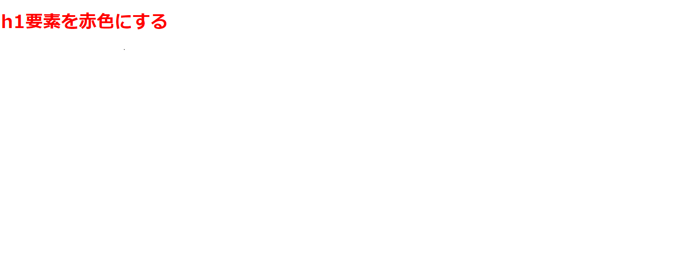

1.CSSとは？
CSSとは「Cascading Style Sheets 」の略で、タグなどの各要素にプロパティという値を割り当てることで文書の書式やページレイアウトをデザインすることができる言語です。
つまり文字の色を変えたり、要素の大きさなどを変えることが出来ます。
2.CSSの構造
CSSは、1.セレクタ 2.プロパティ、3.値の3つで構成されており、プロパティと値を含めた部分をスタイルと呼びます。
下記の場合、「h1」がセレクタ、「color」がプロパティ、「red」が値で、「color : red ;」がスタイルになります。
この記述の場合、h1要素を赤くするといった意味になります。
h1 {
color : red ;
}
又、セレクタを複数指定したい場合はタグを「,」カンマでくぎります
h1 , h2, h3{
color : red ;
}
3.CSSでよく使うタグ
・幅と高さを指定する
width : サイズ
height : サイズ
(width=幅、height=高さ)
・フォントのサイズを指定する
font-size : サイズ
・行揃えを指定する
text-align : 行揃え位置
(left=左揃え、center=中央揃え、right=右揃え)
・色を指定する
color :
・要素の外枠の余白を設定する
margin-top : サイズ
margin-bottom : サイズ
margin-left : サイズ
margin-right : サイズ
(top=上部、bottom=下部、left=左、right=右)
・要素の内側の余白を設定する
padding-top : サイズ
padding-bottom : サイズ
padding-left : サイズ
padding-right : サイズ
(top=上部、bottom=下部、left=左、right=右)
4.CSSの書き方
まず、HTMLにCSSを適用させるにはheadタグ内にCSSファイルを読み込ませる必要があります。
読み込ませ方は、下記のようにheadタグ内に<link rel="stylesheet" href="URL">という形で記述します。このURLというのはCSSファイルのディレクトリになります。
これで、CSSを書く準備が整いました。
例として、h1要素を赤色にしてみましょう。
まずCSSファイルを開いてください。
<!DOCTYPE html>
<html lang="ja">
<head>
<meta charset="UTF-8">
<link rel="stylesheet" href="example.css">
<title>CSSの書き方</title>
</head>
<body>
<h1>h1要素を赤色にする</h1>
</body>
</html>
そしたら、このようにスタイルを{ }で囲って、プロパティと値の間にはコロンを入れます。そして値の末尾にセミコロンを入れましょう。
h1{
color : red ;
}
これでブラウザで確認するとh1要素が赤くなりました。

※プログラミングをする際はエディターを使用するようにしましょう。
以上、いかがでしたか？
CSSはwebサイトをデザインする上で必須の言語です。 又、CSSだけで補えない部分はJquery などのJavaScriptライブラリを使用するとリッチなデザインに仕上がるため、慣れてきたらJquery も学習してみましょう
この記事のキーワード
#CSS #スタイル #プロパティ #セレクタ #値 #Jquery